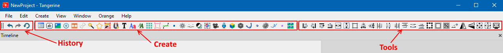
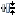
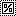

Панель инструментов (Toolbar)
Панель инструментов частично копирует функционал из панели меню и разделена на 3 панели:

Панель History - работа с историей изменений сцены:
- Undo - откатить изменения
- Redo - отменить откат последнего изменения
- Revert - восстановить виджет/сцену до первоначального вида
Панель Create - дублирует функционал меню "Create"
Панель Tools - содержит функционал для управления виджетами на сцене:
- Align Left - выравнивание по левому краю
- Align Right - выравнивание по правому краю
- Align Top - выравнивание по верхнему краю
- Align Bottom - выравнивание по нижнему краю
- Сenter Horizontally - отцентрировать горизонтально
- Center Vertically - отцентрировать вертикально
- Align to Parent/Root - выбрать, относительно чего (родителя или root-сцены) использовать центровку
- Align Centers Horizontally - выровнять центры горизонтально
-  Align Centers Vertically - выровнять центры вертикально
- Distribute Left - распределение по левому краю
- Distribute Horizontally - горизонтальное распределение
- Distribute Right - распределение по правому краю
- Distribute Top - распределение по верхнему краю
- Distribute Vertically - вертикальное распределение
- Distribute Bottom - распределение по нижнему краю
- Align to Selection/Root/Parent - выбрать, относительно чего (выделения, root-cцены или родителя), использовать выравнивание
- Restore Original Size - восстановить изначальный размер виджета
-  Reset Scale - восстановить изначальный масштаб виджета
- Reset Rotation - восстановить изначальный угол поворота виджета
- Flip Horizontally - перевернуть виджет по горизонтали
- Flip Vertically - перевернуть виджет по вертикали
- Fit to Container - изменить размер виджета по размеру контейнера (в котором он находится)
- Fit to Content - изменить размер виджета по содержимому контейнера
- Center View - центрироваться в Viewport на выбранном виджете